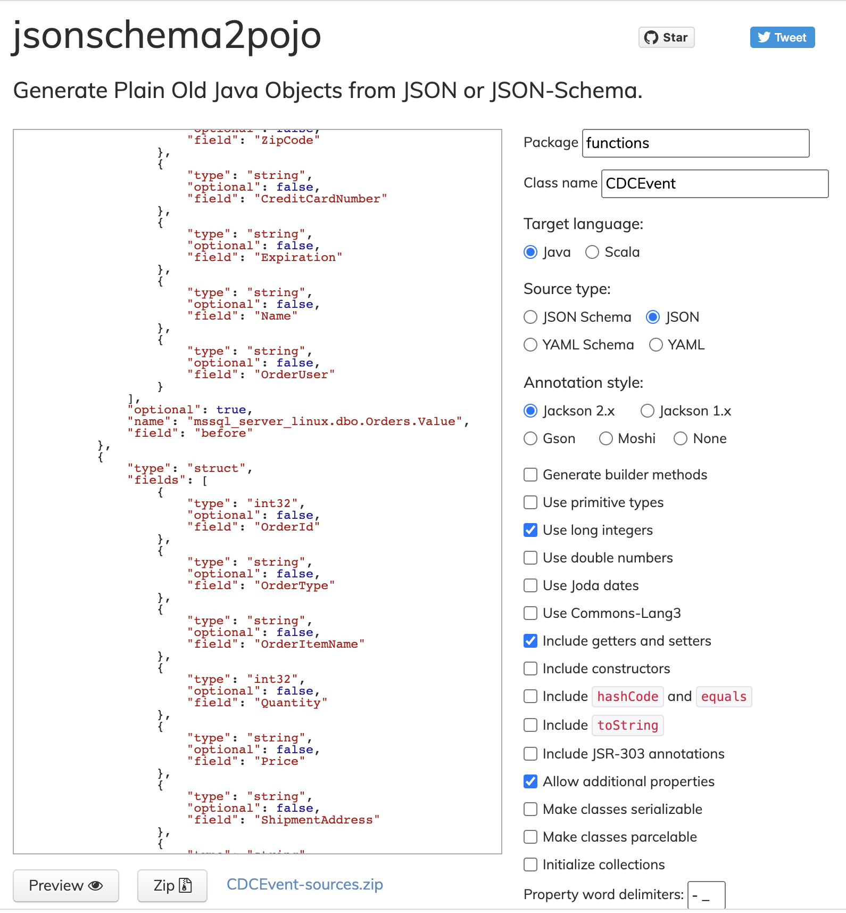

Appendix
Querying the SQL database
In a pinch you can query the sql database like this (NOTE: assumes this is run from the project where the DB server is)
oc exec deployment/mssql-server-linux -- /opt/mssql-tools/bin/sqlcmd -S mssql-server-linux -U sa -P 'Password!' -q 'SELECT * FROM InternationalDB.dbo.Orders'Alternatively (originally from lab)
oc exec deployment/mssql-server-linux -- /opt/mssql-tools/bin/sqlcmd -S mssql-server-linux -U sa -P Password! -d InternationalDB -Q "select top 5 * from dbo.Orders where OrderUser='admin'"
Debugging Kafka Topics
You can run a consumer to see all that’s been posted to a kafka topic by running the following command (NOTE: This assumes that command is run in the context of the current kafka project)
|
For this to work you need to ensure you are logged into the OpenShift cluster and that this variable is set to whatever topic you’re wanting to watch. For example: TOPIC=legacy-inventory-cdc KAFKA_PROJECT=cdc-demo-dev |
oc exec -it demo-kafka-0 -n ${KAFKA_PROJECT} -- bin/kafka-console-consumer.sh --bootstrap-server localhost:9092 --topic ${TOPIC} --from-beginningConnect and View MS SQL Database
You can use adminer to connect to the mssql database. You can either deploy adminer into the cluster (particularly when you want to show the internals of a db in a demo) or deploy it locally
In cluster (via Playbook)
Run the following command from the terminal:
ansible-playbook -i ${DEMO_HOME}/ansible/demo/inventory \
${DEMO_HOME}/ansible/demo/main.yaml \
-e "ACTION=adminer_create"
You can affect which namespace adminer is deployed to by changing the db_project environment variable (e.g. -e "db_project=my-project"). Just bear in mind that it expects the mssql-server-linux database deployment to be in this namespace
|
Creating the demo using the create-demo.sh script and the -a flag will also provision adminer.
|
Locally
Run this command from the VSCode terminal (assuming your current project is the project that houses the SQL Server)
oc port-forward svc/mssql-server-linux 1433:1433 -n $dev_prjThen, back on your host machine, run the following in a terminal
docker run --rm -p 8080:8080 -e ADMINER_DEFAULT_SERVER=docker.for.mac.localhost:1433 adminer|
Make sure the port after |
On your local machine, navigate to port 8080

-
Username:
sa -
Password:
Password! -
Database:
InternationalDB
Developing Legacy App Consumer
Create JSON to POJO
-
Start with some example
.jsongenerated from CDC event in this section -
Navigate to this site and paste in the json per screenshot
 -
Click the link to download the zip file
-
expand into the
functionsdirectory -
Update tests to show JSON to POJO working
Building the Legacy App Consumer
To build the application that is going to be watching for CDC events, you can do the following:
-
Issue the following command (ensuring the environment setup specified has been done)
You first must set the following environment variables to log into your chosen image registry (e.g.
quay.io):-
USER -
PASSWORD
mvn -B package -DskipTests \ -Dquarkus.container-image.build=true \ -Dquarkus.container-image.push=true \ -Dquarkus.container-image.registry=quay.io \ -Dquarkus.container-image.group=mhildenb \ -Dquarkus.container-image.name=cdc-legacy-consumer \ -Dquarkus.jib.base-jvm-image=registry.access.redhat.com/ubi8/openjdk-11@sha256:a6ad844fe15c91ae7a766c5c674c7c17b3a7ea082596ec823ef031d459b66b83 \ -Dquarkus.container-image.username=${USER} -Dquarkus.container-image.password=${PASSWORD} \ -Dquarkus.container-image.tag=1.0 \ -f ${DEMO_HOME}/example/cdc-legacy-consumer -
Deploying the Legacy App Consumer
|
This consumer gets deployed as part of the walkthrough. Ideally you would follow the ansible playbook command as specified here so that the consumer is deployed with the proper configuration The instructions below for are lower-level testing |
Once the new image is built, you can deploy the legacy-consumer to the ${dev_prj}, with the following command:
oc apply -f ${DEMO_HOME}/example/cdc-legacy-consumer/kube/legacy-consumer-adaptor.yaml -n ${dev_prj}Strategies for Testing Legacy App Consumer
There are a few different ways you can test the application
Produce a message on a topic
You can use the following command to send a pre-formatted file to the kafka cluster. Assuming the correct topic, both local (mvn quarkus:dev) and deployed versions of the application should be able to consume this
|
For this to work you need to ensure you are logged into the OpenShift cluster and that this variable is set to whatever topic you’re wanting to watch. For example: TOPIC=legacy-inventory-cdc |
echo $(cat ${DEMO_HOME}/example/cdc-legacy-consumer/src/test/resources/testCreateEvent.json) | oc exec -it demo-kafka-0 -n $dev_prj -- bin/kafka-console-producer.sh --bootstrap-server localhost:9092 --topic ${TOPIC}Building Coolstore Services
Catalog
Rebuild the catalog service using this command:
|
Set these variables accordingly based on what images are defined in the provision_coolstore.yaml ansible task. We will pass these to jib from the maven command line.
For more information on parameters that can be provided to jib, see here |
mvn -B compile com.google.cloud.tools:jib-maven-plugin:2.8.0:build -Djib.to.image=${IMAGE} \
-Djib.to.auth.username=${USER} -Djib.to.auth.password=${PASSWORD} \
-f ${DEMO_HOME}/coolstore/catalog-serviceTesting Catalog Locally
-
Uncomment the properties at the bottom of: ${DEMO_HOME}/coolstore/catalog-service/src/main/resources/application-default.properties
-
Port forward to the inventory service
oc port-forward svc/inventory 8084:8080
-
Port forward to the catalog database
oc port-forward svc/catalog-database 5432:5432
Inventory
Build a new version of the Inventory service using the following command:
|
Set these variables accordingly based on what images are defined in the provision_coolstore.yaml ansible task. We will pass these to jib from the maven command line.
|
mvn -B package -DskipTests \
-Dquarkus.container-image.build=true \
-Dquarkus.container-image.push=true \
-Dquarkus.container-image.registry=${REGISTRY} \
-Dquarkus.container-image.group=${IMAGE_GROUP} \
-Dquarkus.container-image.name=inventory \
-Dquarkus.jib.base-jvm-image=registry.access.redhat.com/ubi8/openjdk-11@sha256:a6ad844fe15c91ae7a766c5c674c7c17b3a7ea082596ec823ef031d459b66b83 \
-Dquarkus.container-image.username=${USER} -Dquarkus.container-image.password=${PASSWORD} \
-Dquarkus.container-image.tag=${IMAGE_TAG} \
-f ${DEMO_HOME}/coolstore/inventory-serviceInteracting with Legacy App
Post a file to legacy app:
curl -X POST -H 'Content-Type: multipart/form-data' --compressed --insecure -F fileToUpload=@earth-orders.csv -F submit="true" -F fragment="_user10" $LEGACY_URL/upload.php|
You can see the code of the upload.php page here to understand more about how it consumes the posted data |